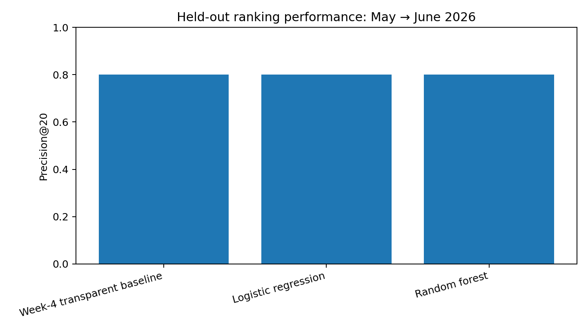
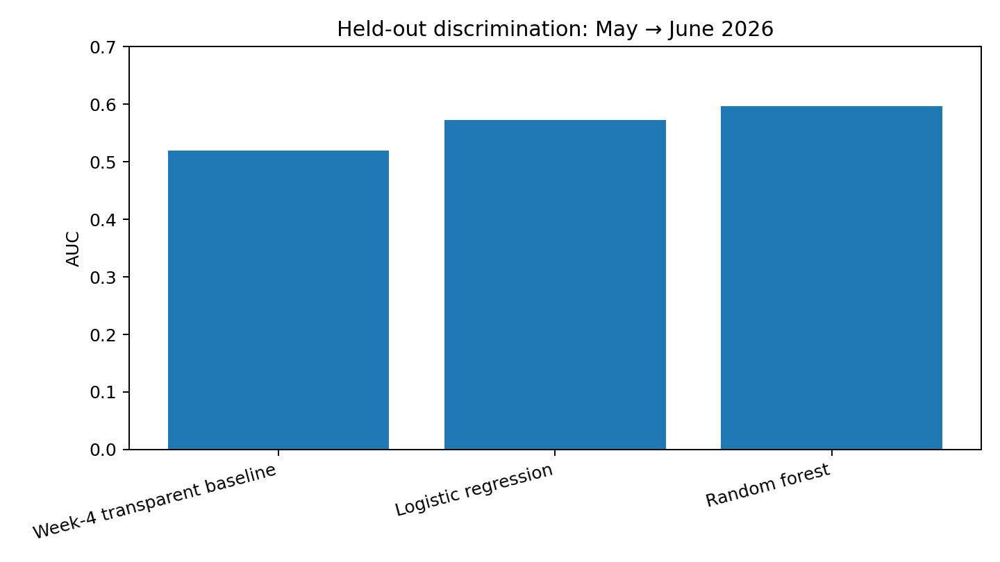

Refresh / Content Opportunity Scoring · Held-out evaluation: May 2026 features → June 2026 outcome
This study asks whether observable search-performance and content-age signals can help prioritize which content items deserve human review. The unit of analysis is a pseudonymized client-content item aggregated at monthly level. A transparent Week-4 rule is compared with logistic regression and a random forest using only feature-window information. On the held-out May→June 2026 window, the random forest had the highest AUC (0.597), while all three methods reached 0.80 Precision@20. The result supports using the model as a prioritization aid, but it does not establish that refreshing content causes recovery or that the model predicts Google's ranking algorithm.
The operational decision is: which content items should an SEO/content team inspect first when review capacity is limited? The action is not automatic publishing or refreshing. A ranked queue is intended to focus human attention on items with stronger observed signals of a possible next-month impression decline.
The executed notebook authenticated to the gated FlyRank/internship-warehouse release and queried the monthly warehouse through DuckDB. A March 2026 source check found 9,841,378 daily rows and the same number of distinct client × content × report_date keys, covering March 1–31.
The development data contained 525,057 rows across February→March, March→April, and April→May feature/outcome pairs. The outcome was an observed next-month impression decline of more than 20%, with measurable GSC data in both months.
The feature audit excludes future values, the label, product-decision fields, and identifiers from the model feature set.
A deliberately invalid feature calculated directly from the future outcome window produced an AUC of 1.000. This is intentionally not a result of the final system. The notebook then removes the leaked field and asserts that the final feature list contains no future/label-derived fields. This demonstrates why a seemingly excellent score can be meaningless when future information leaks into training or evaluation.
| Method | Precision@20 | Precision@50 | AUC |
|---|---|---|---|
| Week-4 transparent baseline | 0.80 | 0.78 | 0.520 |
| Logistic regression | 0.80 | 0.82 | 0.572 |
| Random forest | 0.80 | 0.60 | 0.597 |
The base rate on the held-out labeled population was 0.647. Therefore Precision@20 should be interpreted relative to this observed population and the specific ranking design, not as a general guarantee.


The top-ranked queue contains false positives as well as true positives. The executed notebook inspected three such cases. Their presence is expected in a prioritization system and reinforces the need for human review. Seasonality, query mix, SERP changes, technical issues, and measurement variation are plausible explanations that are not fully represented by the current feature set.
The selected ranking model in the executed notebook is the random forest. The queue assigns a reason code and an action such as review_refresh, review_content_and_intent, inspect_search_opportunity, or monitor. These are review suggestions, not automatic decisions.
The reproducible top-20 queue is included with this paper as capstone_ranked_recommendations_top20.csv. The notebook code also writes the top-100 public-safe queue when executed.
The executed notebook is included in the repository under work/notebooks/capstone.ipynb. The supporting outputs are under work/outputs/. Authentication uses the Hugging Face HF_TOKEN through the Colab Secret mechanism; the token value is not stored in the notebook.
Built on the FlyRank ML Internship dataset. Data source: FlyRank. The public paper intentionally excludes client names, domains, URLs, private queries, credentials, and raw warehouse exports.